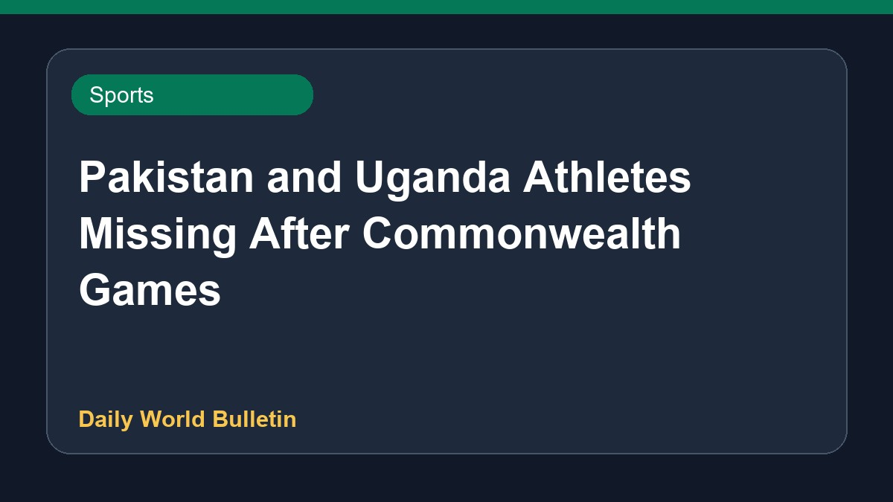

Pakistan and Uganda Athletes Missing After Commonwealth Games

Following the conclusion of the Commonwealth Games in Glasgow, several athletes from Pakistan and Uganda have been reported missing. Among them is Pakistani boxer Qudratullah, whose disappearance was noted after his campaign ended. Authorities and media outlets have highlighted these unexpected vanishings as the sporting event wrapped up. Due to limited source information, specific details regarding the total number of missing individuals and ongoing searches remain brief.
Original source: Sports News Sources
Pakistan and Uganda athletes ‘missing’ after Commonwealth Games - aljazeera.com ↗
Pakistan and Uganda athletes ‘missing’ after Commonwealth Games - aljazeera.com ↗